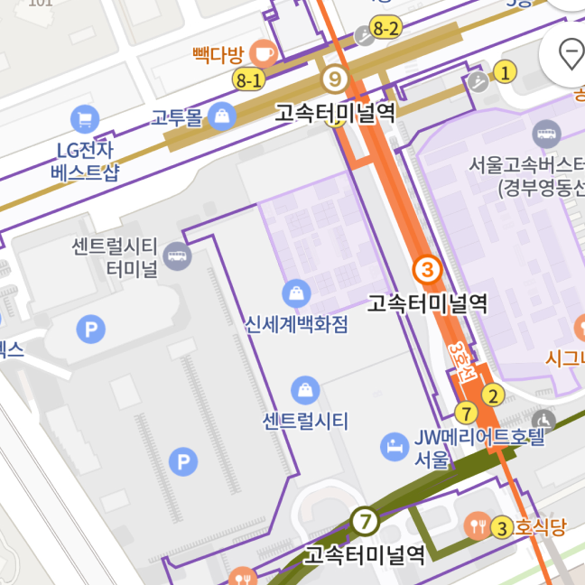

강남점
서울 서초구 신반포로 176 (반포동 19-3)
길안내

주차안내
지하철
버스
무료주차 이용안내
5만원 이상 구매 : 1시간
10만원 이상 구매 : 2시간
15만원 이상 구매 : 3시간
* 다른 무료 주차권 또는 구매 영수증과 합산 불가 합니다.
* 무료 주차는 최대 3시간으로 추가 요금이 부과됩니다.
주차요금
10분당 : 1,000원
* 구매 영수증 미지참 시 주차요금이 부과됩니다.
* 전자 영수증으로도 확인이 가능합니다.
* 경부선 사잇길 주차장은 무인주차 시스템이므로 사전주차등록 후 출차바랍니다.
* '파미에주차장'의 경우 주차요금은 서울시설공단 기준에 따릅니다.
구매 시 적용 가능 주차장
구매 시 적용 가능 주차장
(경부선 광장 주차장 / 경부선 데크 주차장 사용 불가)
3
7
9
호선
고속터미널역(식품 층 바로 연결)을 이용하시면 편안하게 오실 수 있습니다.
고속터미널 (경부)
지선버스
3414, 3420, 3423, 4212, 4318, 4425, 6411
간선버스
143, 148, 360, 361, 362, 401, 462, 540, 640, 642, 643
광역버스
1500-3
마을버스
41
고속터미널 (경부)
지선버스
3414, 3420, 3423, 4318, 4425, 5413
간선버스
142, 143, 360, 361, 362, 401, 462, 540, 640, 642, 643, 8401, 8541
마을버스
서초 10, 서초 14
서울 성모 병원 방향 하차
지선버스
3414, 3420, 3423, 4425, 5413
간선버스
143, 148, 360, 361, 362, 401, 462, 540, 640, 642, 643
광역버스
1500-3